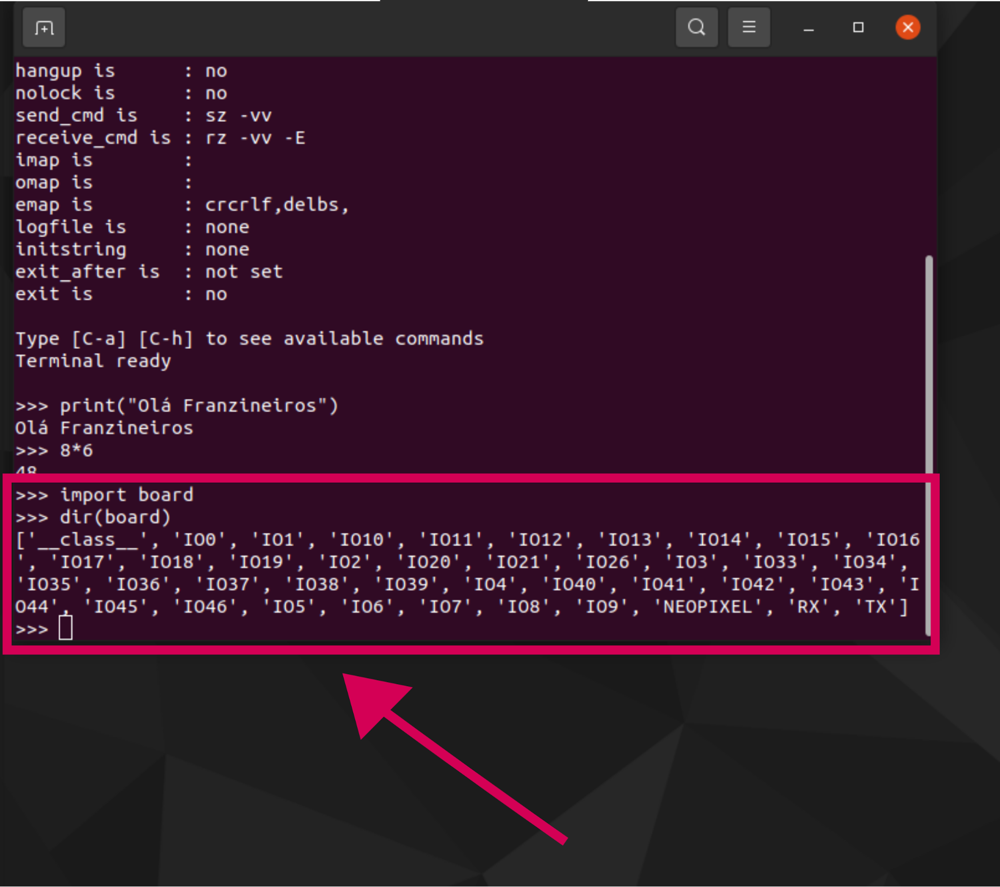
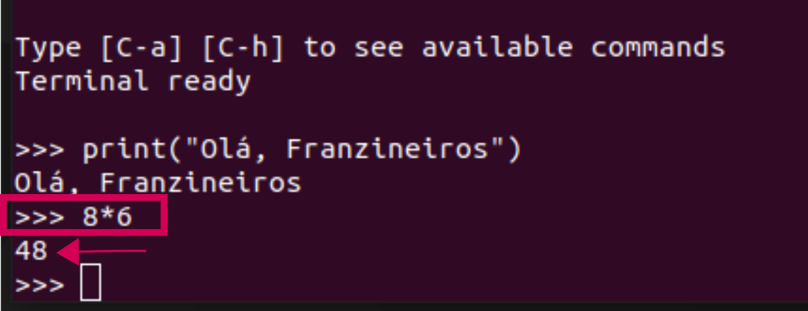
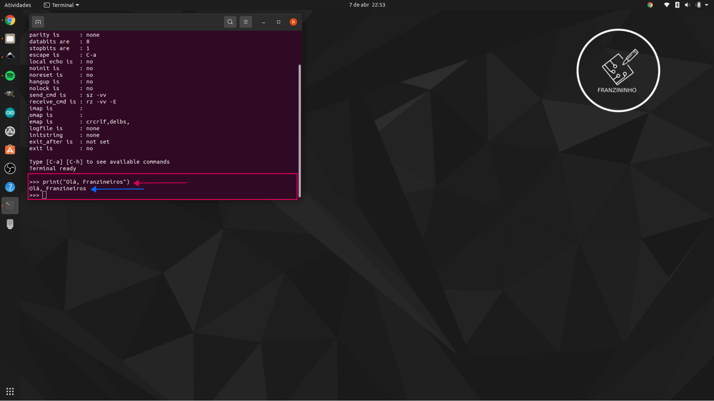

Primeiros passos com CircuitPython no Franzininho Wifi
Para iniciar no CircuitPython é importante você entender como interagir com REPL. Nesses primeiros passos vamos aprender a como usar o REPL através do terminal serial.
Terminal
O primeiro passo é conectar a placa Franzininho Wifi em seu computador e logo irá aparecer algo parecido com um dispositivo de pen drive, conforme a imagem abaixo:

Antes de sair abrindo os arquivos, faça o seguinte passo:
- Conecte a Franzininho
- Abra o terminal
- Instale um terminal, por exemplo, para instalar o picocom, digite os comandos abaixo:
sudo apt-get update
sudo apt-get install picocom
- Para acessar o terminal serial, digite o seguinte comando: picomcom /dev/ttyACMO de enter.

- Agora aperte o Ctrl C do teclado e então aparecerá >>>

- No terminal digite: print(“Hello World”) e aperte o enter (você pode escrever qualquer coisa dentro das aspas, então aparecerá o que você escreveu.

- Agora vamos fazer uma operação matemática, digite um valor | escolha uma operação matemática e digite outro valor, aperte o enter e veja o resultado, conforme a imagem:

-
Agora digite o seguinte código no terminal:
import board dir(board)Então aparecerá o conjunto de pinos disponíveis na Franzininho Wifi.

Agora que você já sabe quais são os nomes dos pinos da placa e também interagir com REPL. Podemos fechar o terminal e dar início abrindo o arquivo code.py que está na pasta.